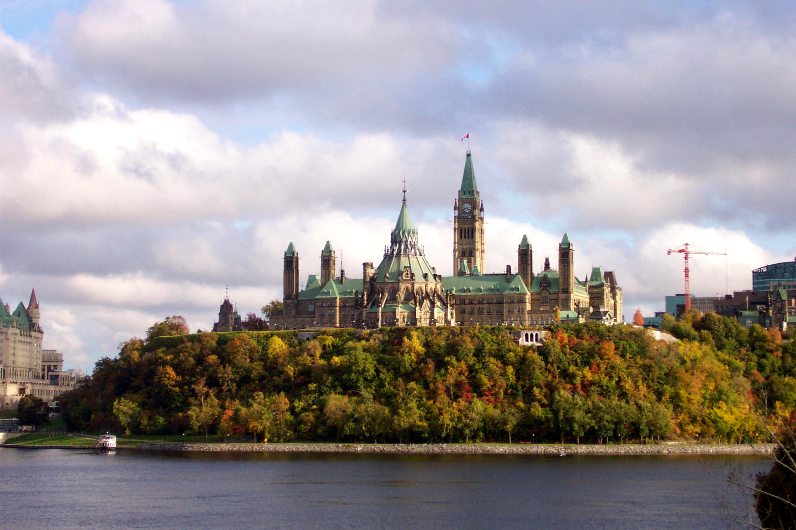

Ottawa! Cause I was born here lmao

Source: https://traveldigg.com/ottawa-canada-a-beautiful-city-in-all-seasons/
City information
- Country: Canada
- Province: Ontario
- Population: Approx 1 million
- Climate: Cold
Ottawa is the place we are currently in, I don't know how much information you want here about it. It's pretty nice, capital of Canada but not Ontario. It's where we keep all of the federal government buildings.
Things to do in Ottawa by season
- Autumn:
- Jump in the fallen leaves
- Throw rocks at pedestrians
- Dress up for Halloween
- Winter:
- Make snow angels
- Make a snow fort
- Get hypothermia
- Spring:
- Collect garbage
- Plant a vegetable or flower garden
- Pick wild flowers
- Dance in the rain
- Summer:
- Go camping
- Go to the beach
- Roll down hills
Last Updated: September 18, 2022 by Ollie Savill